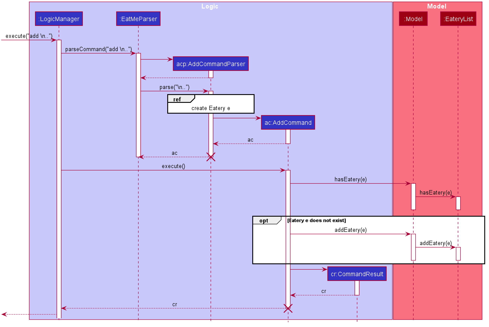
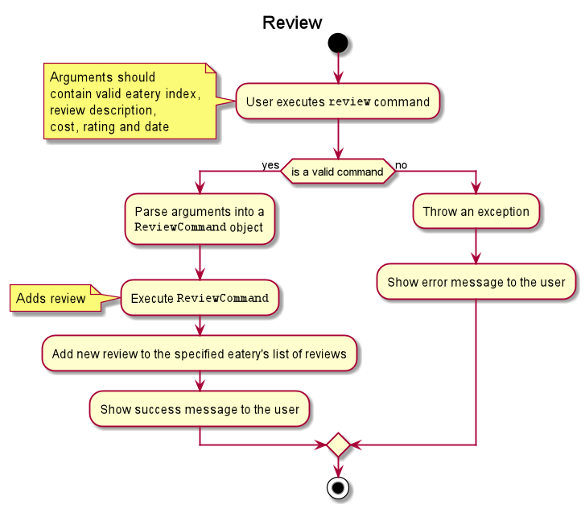

By: AY1920S1-CS2103T-W11-3 Since: Sep 2019 Licence: MIT
- 1. Setting up
- 2. Design
- 3. Implementation
- 3.1. Add Eatery feature :
add - 3.2. Statistics feature :
stats - 3.3. Review Eatery feature
- 3.4. Edit Review feature
- 3.5. Delete Review feature
- 3.6. Add Tag feature
- 3.7. Delete Tag feature
- 3.8. Close Eatery feature
- 3.9. Reopen Eatery feature
- 3.10. Changing Mode of EatMe feature
- 3.11. News Feed Feature
- 3.12. Saving Todo Eatery feature
- 3.13. Load friend’s EateryList feature
- 3.14. Logging
- 3.15. Configuration
- 3.1. Add Eatery feature :
- 4. Documentation
- 5. Testing
- 6. Dev Ops
- Appendix A: Product Scope
- Appendix B: User Stories
- Appendix C: Use Cases
- Appendix D: Non Functional Requirements
- Appendix E: Glossary
- Appendix F: Product Survey
- Appendix G: Instructions for Manual Testing
1. Setting up
Refer to the guide here.
2. Design
2.1. Architecture

The Architecture Diagram given above explains the high-level design of the App. Given below is a quick overview of each component.
The .puml files used to create diagrams in this document can be found in the diagrams folder.
Refer to the Using PlantUML guide to learn how to create and edit diagrams.
|
-
At app launch: Initializes the components in the correct sequence, and connects them up with each other.
-
At shut down: Shuts down the components and invokes cleanup method where necessary.
Commons represents a collection of classes used by multiple other components.
The following class plays an important role at the architecture level:
-
LogsCenter: Used by many classes to write log messages to the App’s log file.
The rest of the App consists of four components.
Each of the four components
-
Defines its API in an
interfacewith the same name as the Component. -
Exposes its functionality using a
{Component Name}Managerclass.
For example, the Logic component (see the class diagram given below) defines it’s API in the Logic.java interface and exposes its functionality using the LogicManager.java class.

How the architecture components interact with each other
The Sequence Diagram below shows how the components interact with each other for the scenario where the user issues the command delete 1.
delete 1 commandThe sections below give more details of each component.
2.2. UI component
API : Ui.java
The UI consists of a MainWindow that is made up of parts e.g.CommandBox, ResultDisplay, EateryListPanel, StatusBarFooter etc. All these, including the MainWindow, inherit from the abstract UiPart class.
The UI component uses JavaFx UI framework. The layout of these UI parts are defined in matching .fxml files that are in the src/main/resources/view folder. For example, the layout of the MainWindow is specified in MainWindow.fxml
The UI component,
-
Executes user commands using the
Logiccomponent. -
Listens for changes to
Modeldata so that the UI can be updated with the modified data.
2.3. Logic component
API :
Logic.java
-
Logicuses theEatMeParserclass to parse the user command. -
This results in a
Commandobject which is executed by theLogicManager. -
The command execution can affect the
Model(e.g. adding anEatery). -
The result of the command execution is encapsulated as a
CommandResultobject which is passed back to theUi. -
In addition, the
CommandResultobject can also instruct theUito perform certain actions, such as displaying help to the user.
Given below is the Sequence Diagram for interactions within the Logic component for the execute("delete 1") API call.
delete 1 Command
The lifeline for DeleteCommandParser should end at the destroy marker (X) but due to a limitation of PlantUML, the lifeline reaches the end of diagram.
|
2.4. Model component
API : Model.java
The Model,
-
stores a
UserPrefobject that represents the user’s preferences. -
stores the EateryList data.
-
stores the FeedList data.
-
exposes an unmodifiable
ObservableList<Eatery>that can be 'observed' e.g. the UI can be bound to this list so that the UI automatically updates when the data in the list change. -
exposes an unmodifiable
ObservableList<FeedPost>that can be 'observed' e.g. the UI can be bound to this list so that the UI automatically updates when the data in the list change. -
does not depend on any of the other three components.
2.5. Storage component

API : Storage.java
The Storage component,
-
can save
UserPrefobjects in json format and read it back. -
can save
EateryListdata in json format and read it back. -
can save
FeedListdata in json format and read it back.
2.6. Common classes
Classes used by multiple components are in the seedu.eatme.commons package.
3. Implementation
This section describes some noteworthy details on how certain features are implemented.
3.1. Add Eatery feature : add
3.1.1. Implementation
The add feature allows the user to add an eatery with the compulsory fields: Name, Address, and Category. The Tag field(s), however, is an optional field. The user can add tag(s) to the eatery later on using the addtag feature, if needed. The add mechanism is facilitated by EateryList. It implements the following operations:
-
EateryList#hasEatery()— Checks if an eatery with the same identity already exists in the eatery list. -
EateryList#addEatery()— Adds an eatery to the eatery list. The eatery must not already exist in the eatery list.
These operations are exposed in the Model interface as Model#hasEatery() and Model#addEatery() respectively.
Given below is an example usage scenario and how the add mechanism behaves at each step.
Step 1. The user launches the application for the first time. The EateryList will be initialized with the initial json data stored.
Step 2. The user executes add \n Two Chefs Eating Place \a 116 Commonwealth Cres, #01-129 \c Chinese to add a new eatery. Before executing the command, the command would need to be parsed first. Hence, the EatMeParser would create AddCommandParser.
If the command is missing the name, address, or category (i.e. \n, \a, and \c), AddCommandParser will throw an ParserException to the user with an error message specifying that the command parameters are incorrect, and an example usage of the command.
|
Step 3. AddCommandParser creates new objects for the different compulsory fields i.e. Name, Address, and Category (and also the Tag, if present), and passes these objects into the constructor for Eatery to create a new Eatery.
Step 4. AddCommandParser returns a new AddCommand with the newly created Eatery as a parameter.
Step 5. AddCommand calls Model#hasEatery to check if the eatery already exists. If it does exist, AddCommand will throw a CommandException specifying that there’s already a duplicate eatery in EateryList. Else, AddCommand will call Model#addEatery to add the eatery into EateryList.
Step 6. After successfully adding the eatery into EateryList, AddCommand will return the CommandResult to the Ui.
The following sequence diagram shows how the add eatery feature is executed. 
The following sequence diagram shows the reference sequence diagram for creating Eatery e.
3.1.2. Design Considerations
Aspect: How Add executes
-
Alternative 1 (current choice): Making Tag field not final.
-
Pros:
-
Easily implemented.
-
More user-friendly as users would most likely want to delete or add new tags.
-
-
Cons: Does not follow the logic of the original Address Book 3 application. More code needs to be refactored.
-
-
Alternative 2: Making Tag field final.
-
Pros: Follows the logic of the original Address Book 3 application; don’t need to refactor more code.
-
Cons: Not as user-friendly.
-
The edit feature allows the user to edit any fields from the selected eatery i.e. Name, Address, Category, and Tag field(s). This feature would replace existing Name, Address, Category, and Tag associated with the eatery, with the new ones inputted by the user. Hence, this feature is not advised for users who wants to add more tags to the current list of tags. The edit mechanism is facilitated by EateryList. It implements the following operations:
-
EateryList#setEatery()— Replaces an eatery with another eatery in theEateryList.
These operations are exposed in the Model interface as Model#setEatery().
Given below is an example usage scenario and how the add mechanism behaves at each step.
Step 1. The user launches the application for the first time. The EateryList will be initialized with the initial json data stored.
Step 2. The user executes edit 1 \a 116 Commonwealth Cres, #01-140 to edit the address of an existing eatery. Before executing the command, the command would need to be parsed first. Hence, the EatMeParser would create EditCommandParser.
Step 3. EditCommandParser creates EditEateryDescriptor using the parameters specified (i.e. address, in this scenario).
Step 4. EditCommandParser returns a new EditCommand with the newly created EditEateryDescriptor as a parameter.
Step 5. EditCommand creates a new Eatery using the existing Eatery to be edited and EditEateryDescriptor.
Step 6. If the newly created Eatery is not a duplicate of the existing Eatery, EditCommand calls Model#hasEatery to check if the eatery exists in the list. If the eatery is a duplicate or it exists in the list, EditCommand will throw a CommandException specifying that there’s already a duplicate eatery in EateryList. Else, EditCommand will call Model#setEatery to modify the eatery.
Step 7. After successfully editing the eatery, EditCommand will return the CommandResult to the Ui.
The following sequence diagram shows how the edit eatery feature is executed.

The following sequence diagram shows the reference sequence diagram for creating an EditEateryDescriptor e.
The reference sequence diagram for creating Eatery edited has been omitted as the steps are the same as the reference sequence diagram for add command above.
3.1.3. Design Considerations
Aspect: Replace or add on to eatery’s list of tags
-
Alternative 1 (current choice): Replace the entire list of tags
-
Pros:
-
Easy to implement.
-
More user-friendly — command makes more sense to the user.
-
-
Cons: Need to create additional command to handle adding of tags to the current list of tags.
-
-
Alternative 2: Adding to the list of tags
-
Pros:
-
Easy to implement.
-
Don’t need to create an additional command to add tags.
-
-
Cons: Not as user-friendly.
-
3.2. Statistics feature : stats
3.2.1. Implementation
The stats feature allows the user to generate statistics about the eateries they have visited and reviews they have made at those visited eateries.
Given below is an example usage scenario and how the stats mechanism behaves at each step.
Step 1. The user launches the application for the first time. The EateryList will be initialised with the initial or previous json data stored.
Step 2. The user executes stats to generate statistics for the current application state. The EatMeParser would return a StatsCommand to execute the command.
Step 3. StatsCommand then creates Statistics to generate the different types of statistics needed. To create the different types of statistics, Statistics would, first, sort the eateries in EateryList based on different conditions i.e. categories, total expense, total number of visits. After sorting the eateries, Statistics would then use these sorted lists to generate the appropriate statistics.
If the user executes the stats command in the Todo mode, StatsCommand would throw a CommandException to the user specifying that the user is in the wrong mode. In addition, if there is no eateries with any reviews in the application at the time of stats execution, the StatsCommand would throw a CommandException error saying that there is no data to generate statistics. Lastly, if there is any error during the generating of statistics, the StatsCommand will throw another CommandException saying that there is an unknown error and the application is unable to generate statistics.
|
Step 4. StatsCommand would then call Model#setStatistics() with Statistics as a a parameter.
Step 5. After successfully generating the statistics, StatsCommand will return the CommandResult to the Ui.
The following sequence diagram shows how the statistics feature is executed.
Since the statistic feature has a different user interface compared to the other commands i.e. AddCommand, AddTagCommand, etc., it would be useful to explain how the different user interface components work.
Step 1. When the Ui receives the CommandResult from StatsCommand, the Ui will call MainWindow#showStats().
Step 2. MainWindow#showStats() will check if `StatsWindow is already open. If it is opened, it will call StatsWindow#initStats() and focuses the window. Else, it will call StatsWindow#initStats() and displays the window.
Step 3. In StatsWindow#initStats(), StatsWindow will create a CustomLayeredGraph and CustomPiechart to create the graph and pie chart needed for the statistics report.
The following sequence diagram shows how the statistics feature shows the statistics to the user.

3.2.2. Design Considerations
Aspect: Whether the statistics should auto-update when an eatery is added or a review is added to an eatery.
-
Alternative 1 (current choice): Not making the statistics auto-update
-
Pros: Easy to implement; don’t need to refactor existing code to make use of ObservableList and add ListChange listeners.
-
Cons: User would need to call
statscommand after every addition or change made to the eatery or reviews of an eatery.
-
-
Alternative 2: Making the statistics auto-update
-
Pros: User would not need to call
statscommand after every addition or change made to the eatery or reviews of an eatery. -
Cons: Need to refactor a lot of existing code.
-
Reason for choosing alternative 1: Although it may be annoying for the user to keep calling stats command after every change made, we realise that since stats acts as a statistics report for the users, users may not call the stats command as often to justify refactoring the entire code. Furthermore, to make a change to the eatery or reviews, the user would still need to minimize StatsWindow and unminimize it to view the auto-updated changes. Hence, the number of steps the user would need to execute to see the change in statistics is the same even for both auto-update and without auto-update.
3.3. Review Eatery feature
3.3.1. Implementation
The review mechanism is facilitated by EateryList.
It is stored internally as a set of reviews along with the other
attributes of an eatery.
Additionally, it implements the following operations:
-
Eatery#addReview— Adds a review to the eatery identified by the user input.
Given below is an example usage scenario and how the review mechanism behaves at each step.
Step 1. The user launches the application for the first time. The EateryList will be initialized with the initial json data stored.
Step 2. The user executes review 1 … command to add a review to the first Eatery in the address book. The review command will call Eatery#addReview().
| If the index given is not a valid index (ie, out of bounds or negative), it will return an error to the user rather than attempting to review the Eatery. |
If the review is missing a Description, Rating, Cost or a Date field, an error will be shown to the user instead of adding the review.
|
Step 3. The eatery list now returns a success message upon successfully adding a review to the eatery.
The following diagram shows the activities involved. 
The following diagram shows how the method is executed.

Aspect: How review executes
-
Alternative 1 (current choice) Adds a review to an eatery’s list of reviews.
-
Pros: Easy to understand and implement.
-
Cons: The set of reviews of an
Eateryis not final, unlike tags.
-
-
Alternative 2 Return a new set of reviews every time a review is added.
-
Pros: Makes the set of reviews final, adhering to the existing model.
-
Cons: Highly inefficient
-
Aspect: Data Structure used to store Reviews
-
Alternative 1 (current choice): No further nesting of Review field in Eatery.
-
Pros: Easily implemented and will not compromise speed.
-
Cons: The OOP model might be different from other Commands.
-
-
Alternative 2: Further nesting of Review field in Eatery.
-
Pros: A better OOP model.
-
Cons: May decrease performance and difficult to implement.
-
3.4. Edit Review feature
3.4.1. Implementation
The edit review mechanism is facilitated by EateryList. It makes use of the following operations:
-
EateryList#getActiveEatery -
EateryList#getActiveReviews
Given below is an example usage scenario and how the close mechanism behaves at each step.
Step 1. The user decides to check the reviews of an eatery by using show command.
Step 2. The user then decides to edit the first review of the eatery and executes editreview 1 … with the necessary fields.
| If none of the fields entered are different from the existing fields, the user will be shown an error saying that at least one field should be different. |
| If the user input is not according to the given format, an error will be shown to the user instead of attempting to edit the review. |
Step 3. The application returns a success message upon successfully editing the review.
The following diagram shows the activities involved.

3.4.2. Design Considerations:
Aspect: How edit review executes
-
Alternative 1 (current choice): When the show command is used,
EateryList#setActiveEaterywill set the eatery shown as the active eatery. When the user attempts to edit review, the eatery is accessed usingEateryList#getActiveEatery. The reviews are modified by usingEateryList#getActiveReviews, which returns a list of reviews. The changed list is set to theActiveEaterybyEatery#setReviews.-
Pros: Easy to access and edit reviews.
-
Cons: The
ActiveEateryis not modified until theshowcommand is used on another eatery.
-
-
Alternative 2: Operate directly on the list of reviews after using
showcommand and set the changed list to the eatery.-
Pros:
EditReviewis only accessible after usingshowcommand. -
Cons: Difficult to implement and understand.
-
3.5. Delete Review feature
3.5.1. Implementation
The delete review mechanism is facilitated by EateryList. It makes use of the following operations:
-
EateryList#getActiveEatery -
EateryList#getActiveReviews
Given below is an example usage scenario and how the close mechanism behaves at each step.
Step 1. The user decides to check the reviews of an eatery by using show command.
Step 2. The user then decides to delete the first review of the eatery and executes deletereview 1 … .
| If the index given is not a valid index (ie, out of bounds or negative), it will return an error to the user rather than attempting to close the Eatery. |
Step 3. The application returns a success message upon successfully deleting the review.
3.5.2. Design Considerations:
Aspect: How delete review executes
-
Alternative 1 (current choice): When the show command is used,
EateryList#setActiveEaterywill set the eatery shown as the active eatery. When the user attempts to delete a review, the eatery is accessed usingEateryList#getActiveEatery. The reviews are modified by usingEateryList#getActiveReviews, which returns a list of reviews. The changed list is set to theActiveEaterybyEatery#setReviews.-
Pros: Easy to access and delete reviews.
-
Cons: The
ActiveEateryis not modified until theshowcommand is used on another eatery.
-
-
Alternative 2: Operate directly on the list of reviews after using
showcommand and set the changed list to the eatery.-
Pros:
DeleteReviewis only accessible after usingshowcommand. -
Cons: Difficult to implement and understand.
-
The following diagram shows the use case of review field as a whole.

3.6. Add Tag feature
3.6.1. Implementation
The addtag mechanism is facilitated by the EateryList and implement the following operations:
-
EateryList#getFilteredEateryList -
EateryList#setEatery
The effects of add tag are cumulative, ie it does not replace existing tags but adds the given tags.
Given below is an example usage scenario and how the addtag mechanism behaves.
Step 1. The user launches the application and wants to add tags to the first eatery displayed.
Step 2. The user executes addtag 1 … to add the required tags to the eatery.
| If the index specified is invalid (negative or out of bounds) or the format of the command is wrong, an error will be shown to the user. |
Step 3. If the tags to be added are not associated with eatery previously, they will be added to the eatery.
Step 4. AddTag success message is shown to the user.
3.6.2. Design Considerations:
How AddTag executes:
-
Current choice: Returns a new Eatery object with the existing and new tags. The tags to be added are checked if they are already associated with the eatery before adding.
-
Pros: Preserves the OOP model of the project and there is no need for setter methods.
-
Cons: Very inefficient to return new Eatery object every time tags are changed.
-
3.7. Delete Tag feature
3.7.1. Implementation
The deleteTag mechanism is facilitated by the EateryList and implement the following operations:
-
EateryList#getFilteredEateryList -
EateryList#setEatery
Given below is an example usage scenario and how the addtag mechanism behaves.
Step 1. The user launches the application and wants to delete tags from the first eatery displayed.
Step 2. The user executes deletetag 1 … to delete the required tags from the eatery.
| If the index specified is invalid (negative or out of bounds) or the format of the command is wrong, an error will be shown to the user. |
Step 3. If the tags to be deleted are not associated with eatery previously, no changes will be made.
Step 4. DeleteTag success message is shown to the user.
3.7.2. Design Considerations:
How AddTag executes:
-
Current choice: Returns a new Eatery object with the existing and new tags. The tags to be deleted are checked if they are already associated with the eatery before deleting.
-
Pros: Preserves the OOP model of the project and there is no need for setter methods.
-
Cons: Very inefficient to return new Eatery object every time tags are changed.
-
3.8. Close Eatery feature
3.8.1. Implementation
The close mechanism is facilitated by EateryList. It implements ReadOnlyEateryList interface with the following operation:
-
EateryList#setEatery()— Replaces an Eatery with a modified Eatery specified by the user input.
Given below is an example usage scenario and how the close mechanism behaves at each step.
Step 1. The user launches the application for the first time. The EateryList will be initialized with the initial json data stored.
Step 2. The user executes close 1 command to close the 1st Eatery in the address book.
| If the index given is not a valid index (ie, out of bounds or negative), CloseCommand will throw a CommandException to the user rather than attempting to close the Eatery. |
Step 3. The address book now returns a success message upon successfully closing the Eatery, and the Eatery will be highlighted in red.
Step 4. The user then decides that he wants to close another Eatery.
| If the index given points to an Eatery already closed (ie, 1 in this situation), CloseCommand will throw a CommandException to the user rather than attempting to close the Eatery. |
The following sequence diagram shows how the close command works:
image::CloseSequenceDiagram.png[]
The following activity diagram summarizes what happens when a user executes a new close command:
image::CloseCommitActivityDiagram.png[]
3.8.2. Design Considerations
Aspect: How Close executes
-
Alternative 1 (current choice): Returns a new Eatery with identical fields except for the isOpen field.
-
Pros:
-
Follows pre-exisiting EditCommand implementation.
-
No need for setter methods.
-
-
Cons: Have to return a new object each time a change is made.
-
-
Alternative 2: Setter method for isOpen field of Eatery.
-
Pros: No need for extra methods in the flow to change the object.
-
Cons:
-
Breaks pre-existing EditCommand implementation.
-
Need for setter methods.
-
-
Aspect: Data structure to support the Close command
-
Alternative 1 (current choice): Uses a boolean value to keep track if the Eatery is reopened or closed.
-
Pros: Easily implemented.
-
Cons: An additional variable to check when executing other commands. Possibility of incorrect manipulation of an Eatery object
-
-
Alternative 2: Maintain two separate lists of Eateries for Reopened and Closed.
-
Pros: Closed Eateries stored apart from Reopened Eateries. Commands executed will only affect Eateries stored in a particular list.
-
Cons: Requires proper handling of individual data structures to ensure each list is maintained and updated correctly.
-
3.9. Reopen Eatery feature
3.9.1. Implementation
The reopen mechanism is facilitated by AddressBook. It implements the ReadOnlyAddressBook interface with the following operation:
-
AddressBook#setEatery()— Replaces an Eatery with a modified Eatery specified by the user input.
Given below is an example usage scenario and how the reopen mechanism behaves at each step.
Step 1. The user launches the application for the first time. The AddressBook will be initialized with the initial json data stored.
Step 2. The user executes reopen 1 command to close the 1st Eatery in the address book.
| If the index given is not a valid index (ie, out of bounds or negative), ReopenCommand will throw a CommandException to the user rather than attempting to reopen the Eatery. |
Step 3. The address book now returns a success message upon successfully reopening the Eatery, and the Eatery will not longer be highlighted in red.
Step 4. The user then decides that he wants to reopen another Eatery.
| If the index given points to an Eatery already reopened (ie, 1 in this situation), ReopenCommand will throw a CommandException to the user rather than attempting to reopen the Eatery. |
The following sequence diagram shows how the reopen command works:
image::ReopenSequenceDiagram.png[]
The following activity diagram summarizes what happens when a user executes a new reopen command:
image::ReopenCommitActivityDiagram.png[]
3.9.2. Design Considerations
Aspect: How Reopen executes
-
Alternative 1 (current choice): Returns a new Eatery with identical fields except for the isOpen field.
-
Pros:
-
Follows pre-exisiting EditCommand implementation.
-
No need for setter methods.
-
-
Cons: Have to return a new object each time a change is made.
-
-
Alternative 2: Setter method for isOpen field of Eatery.
-
Pros: No need for extra methods in the flow to change the object.
-
Cons:
-
Breaks pre-existing EditCommand implementation.
-
Need for setter methods.
-
-
Aspect: Data structure to support the Reopen command
-
Alternative 1 (current choice): Uses a boolean value to keep track if the Eatery is reopened or closed.
-
Pros: Easily implemented.
-
Cons: An additional variable to check when executing other commands. Possibility of incorrect manipulation of an Eatery object
-
-
Alternative 2: Maintain two separate lists of Eateries for Reopened and Closed.
-
Pros: Reopened Eateries stored apart from Closed Eateries. Commands executed will only affect Eateries stored in a particular list.
-
Cons: Requires proper handling of individual data structures to ensure each list is maintained and updated correctly.
-
3.10. Changing Mode of EatMe feature
3.10.1. Implementation
Allows the user to toggle between Main mode and Todo mode. It extends Command, and once mode is switched, all other command functions would be affected.
The mode is determined through the value of a boolean variable named isMainMode.
Given below is an example usage of how the mode command behaves.
Step 1: The user launches the application. Data from eaterylist will be fetched and will be initialised in Main Mode by default.
Step 2: The user execute mode command and the mode of the application will be switched to todo mode, displaying items in the todo list instead.
Step 3: The user can execute mode command again, returning the application to main mode, showing the items stored in the main list.
The following sequence diagram shows how the mode command works:

The following activity diagram summarizes what happens when a user executes a new command:

3.10.2. Design Considerations
Aspect: How Mode execute
-
Alternative 1 (current choice): Toggle between mode through a boolean value.
-
Pros: Easy for implementation.
-
Cons: An additional factor to check when executing any other commands; Possibility of mis-manipulation of data.
-
Aspect: Data structure to support Mode Command
-
Alternative 1 (current choice): Maintain two separate lists for Main mode and Todo Mode.
-
Pros: Data between the two modes will be separated. Commands executed will only affect data stored in the list for the particular mode.
-
Cons: More effort required for maintenance purposes. Need to make sure that data from main list should not go into todo list, and vice versa
-
3.11. News Feed Feature
As people who really love food, we are interested in keeping up-to-date with the latest food trends and newest eateries to try. The news feed allows the user to save their favorite food blogs to EatMe and have access to the latest food-related articles right from within the app. Should a food blog become irrelevant, the user also has the option to remove it and no longer display its articles.
3.11.1. Terminology
Some terms are used in this feature:
-
Feed- A food blog -
Feed Post- An article from a feed -
News Feed Panel- The right column of the app showing news articles
3.11.2. Implementation
The current news feed supports two commands:
-
AddFeed- Add a new feed -
DeleteFeed- Delete a feed and its associated feed posts
AddFeed - Add a new feed
The following activity diagram shows the flow when the user wants to add a new feed.
Step 1. The user launches the application.
Step 2. EatMe fetches the latest feed posts from the user’s existing feeds and displays them to the user in the news feed panel.
Step 3. The user finds a new favorite food blog called Eatbook and wants to add it into the app. The user executes addfeed \n Eatbook \a https://eatbook.sg/feed to add the new feed. AddFeedCommand calls Model#addFeed with the new feed object, which will in turn add the new feed to the Model’s internal feed list.
The following sequence diagram shows how the AddFeed command executes.
DeleteFeed - Delete a feed and its associated feed posts
The following activity diagram shows the flow when the user wants to delete a feed.
Step 1. The user launches the application.
Step 2. EatMe fetches the latest feed posts from the user’s existing feeds and displays them to the user in the news feed panel.
Step 3. The user is no longer interested in the food blog Eatbook and wants to delete it from the app. The user executes deletefeed \n Eatbook to delete the feed. DeleteFeedCommand calls Model#deleteFeed with the feed to delete, which will in turn remove the feed to the Model’s internal feed list.
The following sequence diagram shows how the DeleteFeed command executes.
3.11.3. Design Considerations
Aspect: Storage of feed list
-
Alternative 1: Store the feed list in the existing Eatery list JSON file.
-
Pros: Single JSON file for all of the user’s data (eateries, todos, feeds).
-
Cons: When sharing your JSON file with another user, the feeds would be transferred as well - Poor user experience because favorite food blogs are a personal choice and should not be transferred when sharing eateries.
-
-
Alternative 2 (current choice): Store the feed list as a separate JSON file.
-
Pros: Separation of eatery-related and feed-related information into two separate JSON files - Allows sharing of eateries without affecting feeds.
-
Cons: Two separate files - Minor inconvenience if the user wants to backup their data to another location.
-
3.11.4. Aspect: Offline behavior of news feed
-
Alternative 1 (current implementation): Store the feed posts from the last successful update in the feed list JSON file
-
Pros: Allows for offline access to feed posts.
-
Cons:
-
Feed posts may be outdated if the user has not opened the app with Internet connectivity for a long time.
-
Larger feed list JSON file size.
-
-
-
Alternative 2: Show an error message when offline.
-
Pros: Small and simple feed list JSON file.
-
Cons: Unable to view feed posts when offline.
-
3.12. Saving Todo Eatery feature
3.12.1. Implementation
This command allows the user to save an eatery from the todo list to the main eatery list. It extends Command.
Given below is an example usage of how the SaveTodo Command behaves.
Step 1: The user launches the application. Data from EateryList will be fetched and initialised in main mode by default.
Step 2: The user executes mode command and the mode of the application will be switched to Todo mode, displaying items in the todo list instead.
Step 3: The user can execute save 1, indicating to the system the index of eatery to be saved.
Step 4: The eatery in the todo list will be removed and an add command will be constructed in the CommandBox for the user to input any necessary fields before adding.
The following sequence diagram shows how the SaveTodo command works:
The following activity diagram summarizes what happens when a user executes a new command:
3.12.2. Design Considerations
Aspect: How SaveTodo execute
-
Alternative 1 (current choice): Construct the commands as a string before displaying to the user.
-
Pros: User-friendly. User will be able to add the eatery to the main list with minimum effort.
-
Cons: Unable to save directly to the main list from todo list. Possible situation can be that the user did not add the new eatery after executing
saveTodocommand. This situation will result in the user requiring to type the wholeaddcommand on his own as information will not be saved.
-
-
Alternative 2 Allow eatery to have the same attributes fields as eatery in main list
-
Pros: As eatery in todo list and main list have the same attributes, it will be possible to
savethe eatery directly to the main list without further input from the user. -
Cons: User will be required to include additional field when adding an eatery in the todo list. Field entered may be irrelevant as user had yet to visit the eatery.
-
Aspect: Data structure to support SaveTodo Command
-
Alternative 1 (current choice): No additional data structure is required for
SaveTodocommand
3.13. Load friend’s EateryList feature
3.13.1. Implementation
The load mechanism is facilitated by ModelManager. It implements the Model interface with the following operation:
-
Model#setUserPrefs()— Replaces the existing UserPrefs with a modified UserPrefs specified by the user input.
Given below is an example usage scenario and how the load mechanism behaves at each step.
Step 1. The user launches the application for the first time. The EateryList will be initialized with the initial json data stored.
Step 2. The user executes load \u Alice command to change the UserPrefs of the ModelManger.
If the command is missing the username (i.e. load \u), LoadCommandParser will throw an ParserException to the user with an error message specifying that the command parameters are incorrect, and an example usage of the command.
|
If the command is missing the username and the prefix (i.e. load), this will be interpreted as loading the owner’s own Eatery List.
|
Step 3. The Eatery List now returns a success message upon successfully changing the UserPrefs, and prompts the user to relaunch the application.
Step 4. The user then decides that he wants to change his UserPrefs to another friend’s one. Before exiting the application, the user can still enter load \u Bob command to change the UserPrefs.
If the user attempts to load a file that has already been set in the UserPrefs, the LoadCommand will throw a CommandException to the user with an error message specifying that the UserPrefs has already been changed.
|
| If the user attempts to load a file that does not exist in the default filepath, the LoadCommand will throw a CommandException to the user with an error message to prompt him to check that the file exists. |
Step 5. The user then decides that he wants to change his UserPrefs back to his own instead. Before exiting the application, the user can still enter load command to reset the UserPrefs of the ModelManage back to his own Eatery List.
The following sequence diagram shows how the load command works:
image::LoadSequenceDiagram.png[]
The following activity diagram summarizes what happens when a user executes a new load command:
image::LoadCommitActivityDiagram.png[]
3.13.2. Design Considerations
Aspect: How Load executes
-
Alternative 1 (current choice): Modifies the existing model in the Eatery List.
-
Pros: Easily implemented without needing to relaunch the GUI.
-
Cons: Require the application to be terminated for the storage to save UserPrefs.
-
-
Alternative 2: Creates a new model to replace the current one.
-
Pros: Easier to implement the loading of file without relaunching the application.
-
Cons: Need to relaunch the GUI so that the new file can be seen.
-
Aspect: User Experience to execute Load
-
Alternative 1 (current choice): The user has to relaunch the application.
-
Pros:
-
Easily implemented.
-
Clear to the user that the UserPaths has been changed.
-
-
Cons: Additional work from the user
-
-
Alternative 2: Relaunch the GUI
-
Pros: The user does not need to reload the application.
-
Cons:
-
Harder to implement.
-
Might confuse the user if the UserPaths has been changed. Especially if the friend’s EateryList is similar to the user (i.e. same school).
-
-
3.14. Logging
We are using java.util.logging package for logging. The LogsCenter class is used to manage the logging levels and logging destinations.
-
The logging level can be controlled using the
logLevelsetting in the configuration file (See Section 3.15, “Configuration”) -
The
Loggerfor a class can be obtained usingLogsCenter.getLogger(Class)which will log messages according to the specified logging level -
Currently log messages are output through:
Consoleand to a.logfile.
Logging Levels
-
SEVERE: Critical problem detected which may possibly cause the termination of the application -
WARNING: Can continue, but with caution -
INFO: Information showing the noteworthy actions by EatMe -
FINE: Details that is not usually noteworthy but may be useful in debugging e.g. print the actual list instead of just its size
3.15. Configuration
Certain properties of the application can be controlled (e.g user prefs file location, logging level) through the configuration file (default: config.json).
4. Documentation
Refer to the guide here.
5. Testing
Refer to the guide here.
6. Dev Ops
Refer to the guide here.
Appendix A: Product Scope
Target user profile:
Value proposition: manage eateries faster than a typical mouse/GUI driven app with statistics of key details such as budget, category and location
Appendix B: User Stories
Priorities: High (must have) - * * *, Medium (nice to have) - * *, Low (unlikely to have) - *
| Priority | As a … | I want to … | So that I can… |
|---|---|---|---|
|
food blogger |
keep a list of outstanding cafes |
clear them in an orderly fashion. |
|
student |
keep a list of affordable eateries |
save money |
|
person with many food allergies |
keep track of dishes I have ordered before |
avoid ordering hazardous food |
|
foodie |
remember places |
share this experience with my family and friends |
|
digital nomad |
tag places with free power + wifi |
sit there for extended periods of time |
|
working adult |
view the menu beforehand |
save time from thinking what to eat |
{More to be added}
Appendix C: Use Cases
(For all use cases below, the System is the EatMe and the Actor is the user, unless specified otherwise)
Use case: Removing an eatery from todo
MSS
-
User requests to view his todo list
-
EatMe toggles to the todo mode
-
User requests to mark an eatery as visited in the list
-
EatMe shifts the data over
-
EatMe toggles to the main mode
-
EatMe requests user for whatever information left that is required before saving in the main mode
Use case ends.
Extensions
-
2a. The list is empty.
Use case ends.
-
3a. The given eatery is invalid.
-
3a1. EatMe shows an error message.
Use case resumes at step 2.
-
-
6a. The given information is of the wrong format.
-
6a1. EatMe shows an error message.
Use case resumes at step 8.
-
Use case: Tagging an eatery in main
MSS
-
User requests to add a tag to an eatery
-
EatMe updates the eatery accordingly
Use case ends.
Extensions
-
1a. The list is empty.
Use case ends.
-
1b. The user gives invalid information.
-
1b1. EatMe shows an error message.
Use case resumes at step 1.
-
Use case: Viewing a menu beforehand
MSS
-
User searches for an eatery
-
EatMe displays the eatery accordingly
-
User reads the entry for the menu
Use case ends.
Extensions
-
1a. The list is empty.
Use case ends.
-
1b. The user gives invalid information.
-
1b1. EatMe shows an error message.
Use case resumes at step 1.
-
{More to be added}
Appendix D: Non Functional Requirements
-
Should work on any mainstream OS as long as it has Java
11or above installed. -
Should be able to hold up to 1000 eateries without a noticeable sluggishness in performance for typical usage.
-
A user with above average typing speed for regular English text (i.e. not code, not system admin commands) should be able to accomplish most of the tasks faster using commands than using the mouse.
-
Main functionalities (CRUD) should work without WiFi.
{More to be added}
Appendix F: Product Survey
Soon
Author: Beginner AB
Pros:
-
Shows trending restaurants nearby
-
Hide option
Cons:
-
Unable to delete lists
-
Unable to search
Appendix G: Instructions for Manual Testing
Given below are instructions to test the app manually.
| These instructions only provide a starting point for testers to work on; testers are expected to do more exploratory testing. |
G.1. Launch and Shutdown
-
Initial launch
-
Download the jar file and copy into an empty folder.
-
Double-click the jar file
Expected: Shows the GUI with a set of sample contacts. The window size may not be optimum.
-
-
Saving window preferences
-
Resize the window to an optimum size. Move the window to a different location. Close the window.
-
Re-launch the app by double-clicking the jar file.
Expected: The most recent window size and location is retained.
-
{ more test cases … }
G.2. Saving an eatery
-
Saving an eatery while eateries are present in todo list.
-
Prerequisites:
-
Application is on todo mode.
-
Todo list is not empty
-
-
Test case: Save 1
Expected: The application will toggle to main mode and a add command will be display in the commandbox. -
Test Case: Save 0
Expected: An error message will be shown in the status message.
-
G.3. Deleting an eatery
-
Deleting an eatery while all eateries are listed
-
Prerequisites: List all eateries using the list command. Multiple eateries in the list.
-
Test case: delete 1
Expected: First contact is deleted from the list. Details of the deleted contact shown in the status message. Timestamp in the status bar is updated. -
Test case: delete 0
Expected: No eatery is deleted. Error details shown in the status message. Status bar remains the same. -
Other incorrect delete commands to try: delete, delete x (where x is larger than the list size) {give more}
-
G.4. Deleting an Eatery
-
Deleting an
Eaterywhile allEateriesare listed-
Prerequisites: List all
Eateriesusing the list command. MultipleEateriesin the list. -
Test case:
delete 1
Expected: FirstEateryis deleted from the list. Details of the deletedEateryshown in the status message. Timestamp in the status bar is updated. -
Test case:
delete 0
Expected: NoEateryis deleted. Error details shown in the status message. Status bar remains the same. -
Other incorrect delete commands to try:
delete,delete x(where x is larger than the list size, or x is a non-integer)
Expected: Similar to previous.
-
{ more test cases to be added }
G.5. Saving data
-
[Proposed] Dealing with missing/corrupted data files
-
Prerequisites: json file type present in a data file where the EatMe app is.
-
Test case: Running the application with json file type with incorrect format
Expected: Application starts with a blankEaterylist panel. Error details shown in the status message.
-
{ more test cases to be added }